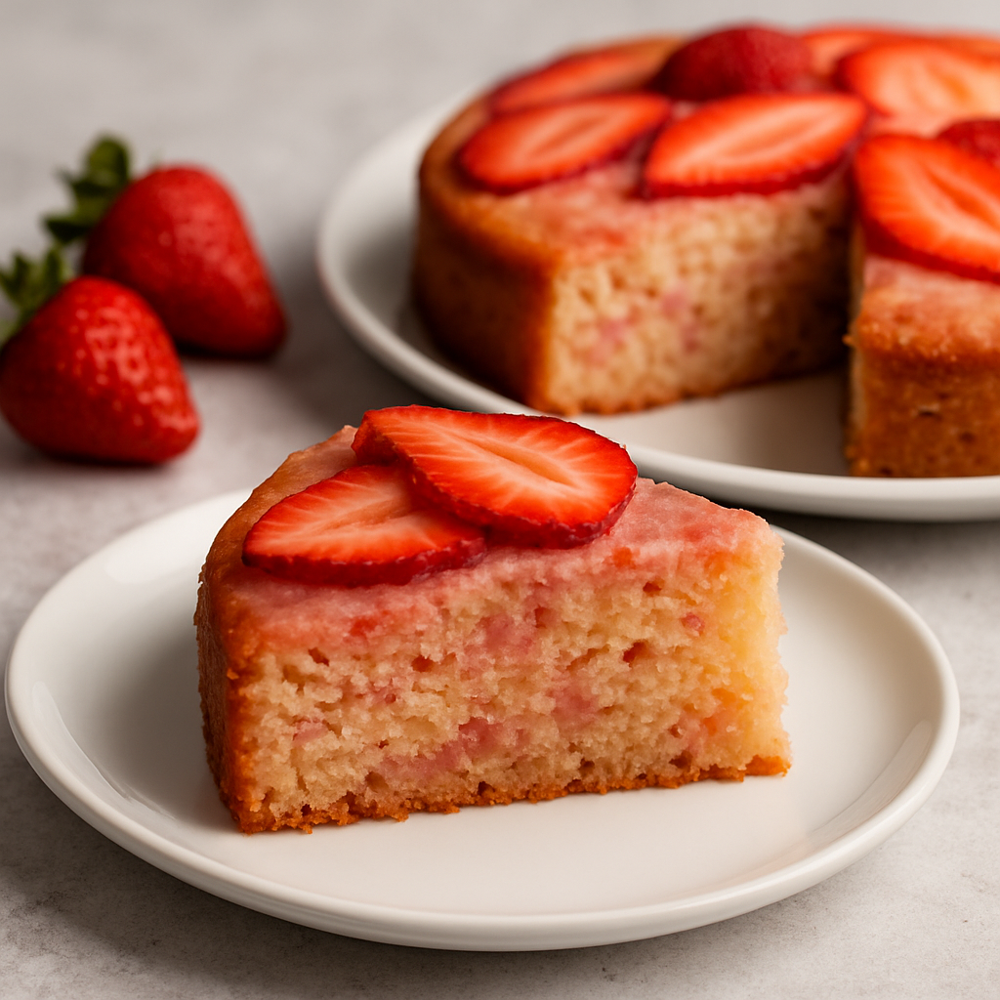

Strawberry Blender Cake

Time Spent Until to Serve
Total Time:
- 3 hrs 45 mins
Nutrition Facts (per serve)
Description:
This strawberry blender cake uses a cheater method—making the batter in a blender. You'll then go on to make an
extraordinary strawberry dessert, similar to strawberry shortcake, but with a cake layer that already tastes
like strawberry and has the perfect texture to soak up all the delicious juices.
Ingredients:
For Cake:
- 1 Packed cup sliced strawberries
- 3 Large eggs
- 1/3 Cup vegetable oil
- 1/2 Cup white sugar
- 1 Lemon, zested
- 1/2 Lemon, juiced
- 1/4 Teaspoon vanilla extract
- 2 1/4 Cups self-rising flour (see Note)
For Whipped Cream:
- 1/2 Cup mascarpone
- 1 Cup cold heavy cream
- 2 Tablespoons confectioners sugar
- 1/4 Teaspoon vanilla extract
For Strawberries:
- 1 Pound fresh strawberries, sliced
- 1/2 Cup white sugar